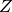

seapy.couplings.coupling.Coupling¶
- class seapy.couplings.coupling.Coupling(name, system, **properties)[source]¶
Bases: seapy.base.Base
Abstract base class for couplings.
- __init__(name, system, **properties)[source]¶
Constructor.
Parameters: - name (string) – Identifier
- junction (seapy.junctions.junction) – junction
- subsystem_from (seapy.subsystems.Subsystem) – subsystem from
- subsystem_to (seapy.subsystems.Subsystem) – subsystem_to
Methods
__init__(name, system, **properties) Constructor. Coupling.df disable([subsystems]) Disable this coupling. enable([subsystems]) Enable this coupling. info([attributes]) Return dataframe. plot(quantity[, yscale]) Plot quantity. Attributes
SORT str(object=’‘) -> str classname Name of class of the object. clf Coupling loss factor eta. enabled Switch indicating whether the object is enabled. frequency Frequency. impedance_from Impedance of subsystem_from corrected for the type of coupling. impedance_to Impedance of subsystem_to corrected for the type of coupling. included Indicates whether the object is included in the analysis. junction mobility_from Mobility of subsystem_from corrected for the type of coupling. mobility_to Mobility of subsystem_to corrected for the type of coupling. modal_coupling_factor Modal coupling factor of the coupling. name reciproce Reciproce or inverse coupling. resistance_from Resistance of subsystem_from corrected for the type of coupling. resistance_to Resistance of subsystem_to corrected for the type of coupling. subsystem_from subsystem_to - __init__(name, system, **properties)[source]
Constructor.
Parameters: - name (string) – Identifier
- junction (seapy.junctions.junction) – junction
- subsystem_from (seapy.subsystems.Subsystem) – subsystem from
- subsystem_to (seapy.subsystems.Subsystem) – subsystem_to
- clf[source]¶
Coupling loss factor eta.
Return type: numpy.ndarray In case the CLF is not specified for the given coupling it is calculated using the SEA consistency relation.
eta_{12} = eta_{21} frac{n_2}{n_1}
- conductivity[source]¶
Conductivity of coupling.
with:
- angular frequency

- modal density of subsystem i
- coupling loss factor of this coupling
- angular frequency
- disable(subsystems=False)[source]¶
Disable this coupling. Optionally disable dependent subsystems as well.
Parameters: subsystems (bool) – Disable subsystems
- enable(subsystems=False)[source]¶
Enable this coupling. Optionally enable dependent subsystems as well.
Parameters: subsystems (bool) – Enable subsystems
- impedance_from[source]¶
Impedance of subsystem_from corrected for the type of coupling.
Return type: numpy.ndarray
- impedance_to[source]¶
Impedance of subsystem_to corrected for the type of coupling.
Return type: numpy.ndarray
- junction = None¶
Junction this coupling is part of.
- mobility_from[source]¶
Mobility of subsystem_from corrected for the type of coupling.
Returns: Mobility 
Return type: numpy.ndarray
- mobility_to[source]¶
Mobility of subsystem_to corrected for the type of coupling.
Returns: Mobility Return type: numpy.ndarray
- modal_coupling_factor[source]¶
Modal coupling factor of the coupling.
Return type: numpy.ndarray See Lyon, above equation 12.1.4
- reciproce[source]¶
Reciproce or inverse coupling.
Returns: Reciproce coupling if it exists, else None.
- resistance_from[source]¶
Resistance of subsystem_from corrected for the type of coupling.
Returns: Impedance  Return type: numpy.ndarray
- resistance_to[source]¶
Resistance of subsystem_to corrected for the type of coupling.
Returns: Impedance Return type: numpy.ndarray
- subsystem_from = None¶
Type of subsystem origin for coupling
- subsystem_to = None¶
Type of subsystem destination for coupling